行草 Classic
signature/variants/classic.svgRunning-cursive brush strokes, sweeping underline, 白文 陳 seal. The current chen-signature.svg.
一筆連寫 One-stroke
signature/variants/flowing.svgStrokes and characters linked by thin threads, as if written without lifting the brush. Stronger lean.

直式落款 Vertical
signature/variants/vertical.svgStacked top to bottom like a painting inscription, with a 白文 陳 seal and a 朱文 偉洺 seal below.
濃墨 Bold ink
signature/variants/bold.svgHeavy, wet brush with more dry-brush texture and a three-character 陳偉洺 seal.
硬筆 Pen
signature/variants/pen.svgThin, fast fountain-pen style with the one-stroke links, steep slant and a small round seal.
簡約 Clean
signature/variants/clean.svgCalmer and more level, no underline or dry-brush, with a slim 朱文 偉洺 seal.

圓相 Ensō
signature/variants/enso.svgThe name inside a single Zen brush circle, drawn last in one breath and trailing off in dry brush.

泥金 Gold leaf
signature/variants/gold.svgGold ink on black with a bolder brush; a light sweeps across the letters once the signature is written.
水墨 Ink wash
signature/variants/inkwash.svgWet ink soaking into rice paper: soft feathered edges and strokes in different ink densities.
朱砂 Vermilion
signature/variants/vermilion.svgCinnabar-red ink, the colour of imperial annotations, with the seal reversed to black.

霓虹 Neon
signature/variants/neon.svgOne continuous line of light, like a long-exposure light painting, with a round neon seal.

朱印 Stamp mark
signature/variants/stamp.svgThe whole signature cut out of a red seal block, usable as a personal logo or chop.